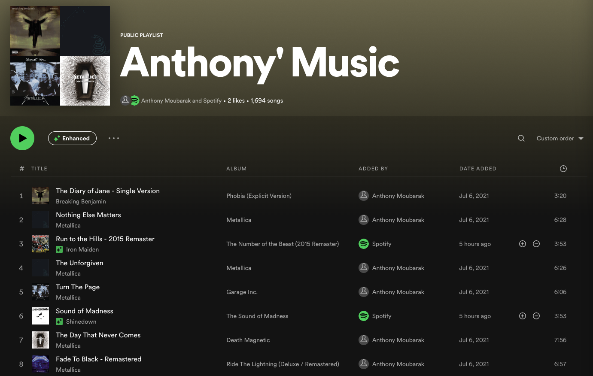
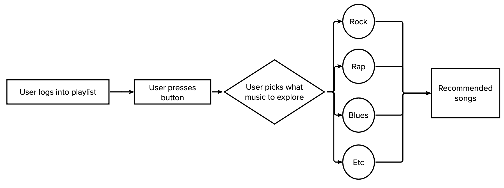

Personally, I believe that the end goal of every data science project should be putting all the models developed into production and developing or improving a certain product that further develops the mission of the company. All throughout this project I have developed multiple models (including classification and clustering algorithms) that I believe could be used to improve certain products in the world of music streaming. I am not saying that the models I have developed are mathematically and technically superior than the ones that are out there right now but what I want from this section is to give my opinion on how clustering and classification could be used to improve the user experience when it comes to music streaming services like Spotify Amazon Music apple music etc.
Recommended recommendation algorithms and systems are not something new and have been popular in the industry for a while but what I want to propose is a new sort of recommendation
system that helps users explore new types of music based on their own preferences.
The current recommendation systems understand what a user likes and recommends new songs based on that usually meaning a user who gets stuck to the same John or genres they usually
listen. In my opinion, Spotify is the streamer that has the best recommendation system applications, the enhanced button and the smart shuffle button, which are explained below:

Spotify's Enhance button suggests new songs that are similar to the songs on the current playlist . To use the Enhance button, a user should click on the "Enhance" button
at the top and click the small plus button to the right of the suggested song to permanently add it to the playlist. The smart shuffle also works in a very similar manner.
Personally, I believe this is best use of recommendation music and I use it multiple times per week as I think it really is accurate which showcases the power of the models used.
My recommendation would be to add a button that would have similar functionalities to the enhanced button but with the purpose of helping users discover different types of music.
The user journey would look like that:

The model is behind this new product/button would probably be classification or clustering algorithms that are trained on a user's playlist/liked music and used to discover types of songs outside the realm of what the user usually listens to.
One obvious and major limitation would be that recommendation systems are successful for a reason and that deviating away from that and trying to look for new music genres/types might lead to lower recommendation accuracies. This is a very preliminary idea but still I think it is an idea worth exploring and improving upon because the beauty of music is how we constantly learn and get attached to new forms of it every once in a while, and it would be great to get some help from algorithms along the way !